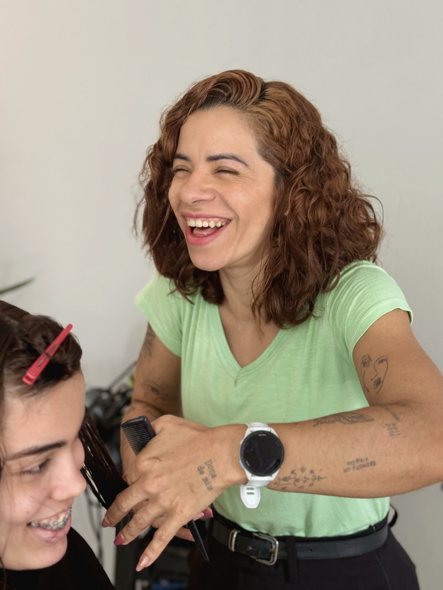

Hoje é dia
das crianças
E o salão tá a mil por aqui, meu amor.
Mãe não para.
Eu sei bem, porque também sou mãe.
Cuidar de você
também é
cuidar deles.
Feliz Dia das Crianças pros pequenos, e um abraço em todas
as mães que correm o dia todo.